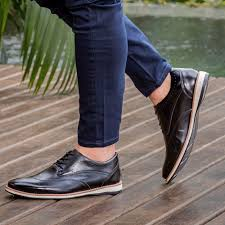
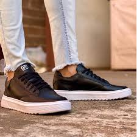

sapato social 1
TÊNIS Masculino Casual ENVIO IMEDIATO, Maior conforto e durabilidade, Solado em Micro expandido, Palmilha em eva, Tamanho : 37 a 44, 37 - 26cm, 38 - ...

sapato social 2
Sapatênis Casual Masculino em Material Nobre - Preto Oferece a você modernidade e elegância em material nobre comfort. Discreto e com muita qualidade, é o sapato perfeito para o uso no dia-a-dia, combinando com vários looks. Menos
Voltar ao Início
Tabela de Preços
| Produto | Preço |
|---|---|
| sapado social 1 | R$ 1500,90 |
| sapato social 2 | R$ 2500.90 |